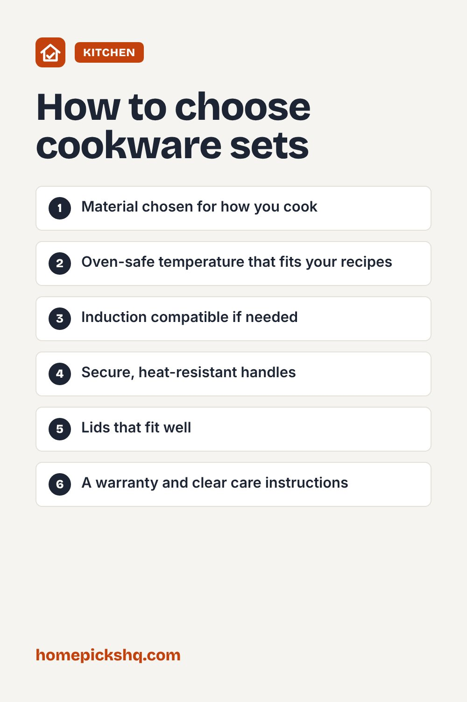

Best Cookware Sets: Materials Compared

How we write these guides: we research manufacturer specifications, expert guidance, and owner feedback. We do not claim to have lab-tested every product. Links to Amazon on this page are affiliate links; see our disclosure.
Cookware sets are tempting because they bundle everything, but the material matters more than the piece count. Each material heats, cleans, and lasts differently. Here is how to match a set to the way you cook.
Browse cookware sets on Amazon
Stainless steel
Clad stainless steel, with an aluminum or copper core between steel layers, heats evenly and handles high heat. It is durable, oven safe, and works on induction. It takes a little technique to prevent sticking: preheat the pan, add oil, and wait before adding food.
Nonstick
Nonstick pans make eggs, pancakes, and delicate fish easy and need little oil. The coating wears over time, so use wood or silicone utensils, avoid very high heat, and replace the pan when the surface is scratched or peeling. PFOA has been phased out of modern cookware, so look for clear labeling about the coating.
Cast iron and carbon steel
Cast iron retains heat well and can last for generations when it is seasoned and cared for. It is heavy and needs hand washing and drying. Carbon steel is lighter and heats faster, and it develops a natural nonstick patina with use.
Ceramic and hard-anodized
Ceramic-coated pans are marketed as a nonstick alternative, though the coating tends to wear faster than many expect. Hard-anodized aluminum is durable, heats evenly, and often has a nonstick interior.
Do you need induction?
If you have an induction cooktop, the cookware must be magnetic. A simple test is to see whether a magnet sticks to the bottom. Many modern sets are labeled induction compatible.
Pieces worth having
Most households need a 10 to 12 inch skillet, a 2 to 3 quart saucepan with lid, a 3 to 4 quart sauté pan, and an 8 quart stockpot. Extra pieces are only worth it if you will really use them.
Quick buying checklist
- Material chosen for how you cook
- Oven-safe temperature that fits your recipes
- Induction compatible if needed
- Secure, heat-resistant handles
- Lids that fit well
- A warranty and clear care instructions
See cookware sets on AmazonUse the checklist above to compare options. As an Amazon Associate I earn from qualifying purchases.

Frequently asked questions
Is stainless steel better than nonstick?
They do different jobs. Many cooks use both: stainless for searing, nonstick for eggs.
Can I put cookware in the dishwasher?
Many stainless pieces are dishwasher safe, but hand washing helps nonstick and cast iron last longer.
How long does nonstick last?
With care, several years. Replace it when the surface is damaged.